الخدمات — 70 صورة
للتسجيل الصوتي: قل «الخدمات رقم N : [المسمّى الصحيح]». الرقم أسفل كل صورة هو رقمها في هذه الصفحة، وتحته المسمّى الحالي كما في الموقع. الصور بدقة مخفّضة للسرعة؛ كل صورة تظهر مرة واحدة فقط في كل صفحات المراجعة.
غلاف الصفحة (1–1)
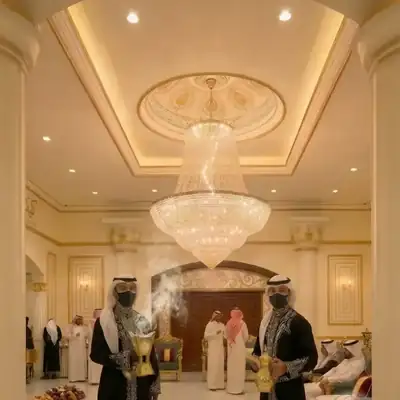
1 قهوجيين كيف الضيافة في قاعة استقبال s-hosts-m-750.webp
الطاقم الرجالي › قهوجيين وصبابين قهوة ومباشرين (2–14)
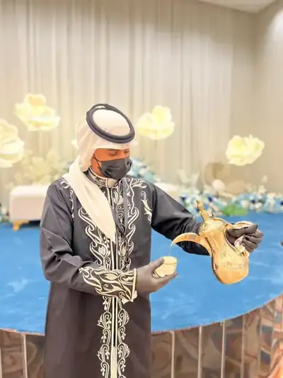
2 قهوجيين وصبابين قهوة ومباشرين صب القهوة السعودية من دلة ذهبية — زي دقلة sv-hosts-1.webp 3 قهوجيين وصبابين قهوة ومباشرين صف من القهوجيين بزي موحد في قاعة sv-hosts-2.webp 4 قهوجيين وصبابين قهوة ومباشرين طاقم مباشرين في قاعة فاخرة sv-hosts-3.webp 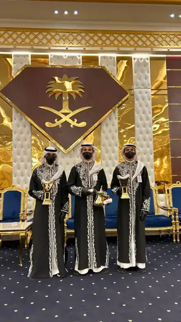
5 قهوجيين وصبابين قهوة ومباشرين طاقم بالدقلة أمام الشعار الوطني sv-hosts-4.webp 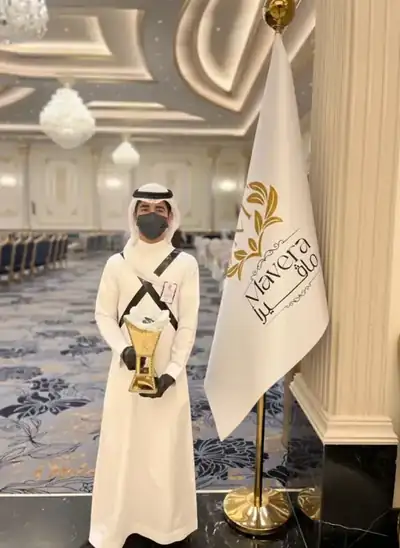
6 حزام زي صبابين بحزام أنيق — الأكثر طلبًا للمناسبات الرسمية sv-hizam-1.webp 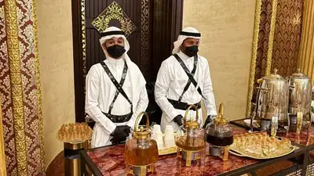
7 حزام زي صبابين بحزام أنيق — الأكثر طلبًا للمناسبات الرسمية sv-hizam-2.webp 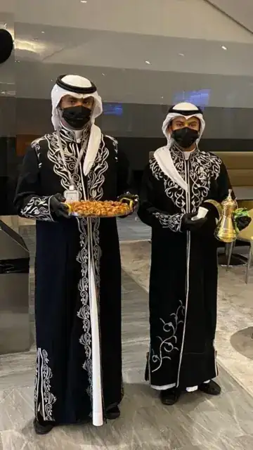
8 دقلة دقلة صبابين سعودية أصيلة — طابع حجازي sv-dagla-2.webp 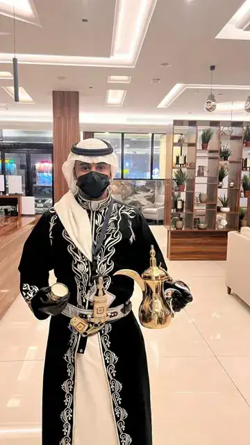
9 دقلة وجنبية دقلة مع جنبية تراثية فاخرة sv-janbiya-1.webp 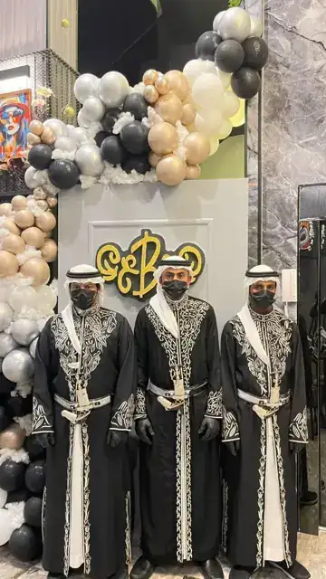
10 دقلة وجنبية دقلة مع جنبية تراثية فاخرة sv-janbiya-2.webp 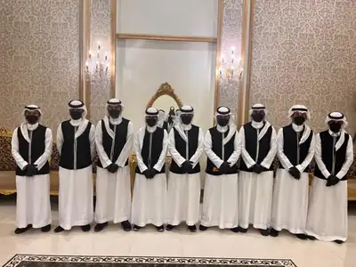
11 سديرية سديرية صبابين أنيقة — عملية للفعاليات الطويلة sv-sideriya-1.webp 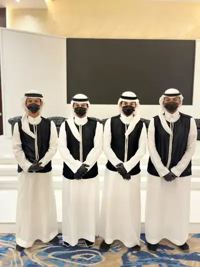
12 سديرية سديرية صبابين أنيقة — عملية للفعاليات الطويلة sv-sideriya-2.webp 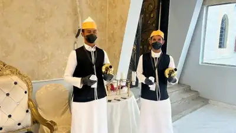
13 مكاوي زي مباشرين مكاوي تراثي — للمناسبات ذات الطابع المكّي sv-makkawi-1.webp 14 مكاوي زي مباشرين مكاوي تراثي — للمناسبات ذات الطابع المكّي sv-makkawi-2.webp
الطاقم الرجالي › سقّاء زمزم (15–21)
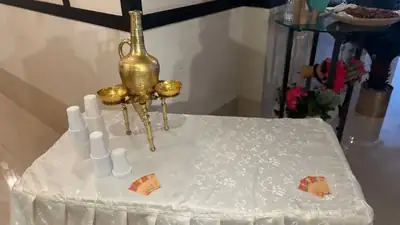
15 سقّاء زمزم أباريق زمزم نحاسية وكاسات تقديم sv-zamzam-2.webp 16 سقّاء زمزم سقّاء زمزم بزي تراثي sv-zamzam-3.webp 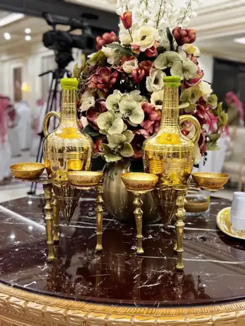
17 سقّاء زمزم إبريق نحاسي مزخرف sv-zamzam-4.webp 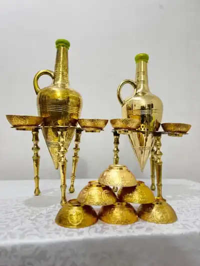
18 سقّاء زمزم تقديم ماء زمزم للضيوف sv-zamzam-5.webp 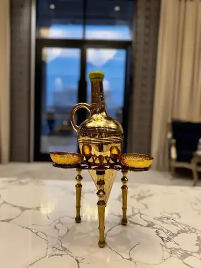
19 سقّاء زمزم طقم أباريق زمزم sv-zamzam-6.webp 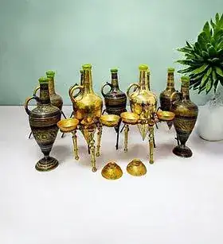
20 سقّاء زمزم ركن سقيا زمزم sv-zamzam-7.webp 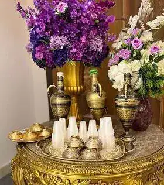
21 سقّاء زمزم تفاصيل الإبريق النحاسي sv-zamzam-8.webp
الطاقم الرجالي › مقدمين طعام — سفرجية (22–27)
22 مقدمين طعام — سفرجية فريق سفرجية بزي موحد sv-safarjia-1.webp 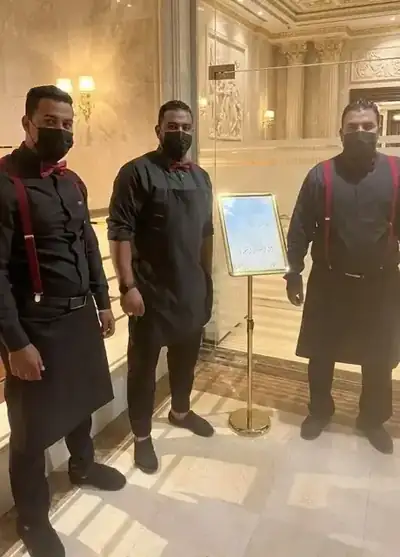
23 مقدمين طعام — سفرجية سفرجية بمريول أسود sv-safarjia-2.webp 24 مقدمين طعام — سفرجية فريق تقديم طعام في قاعة sv-safarjia-3.webp 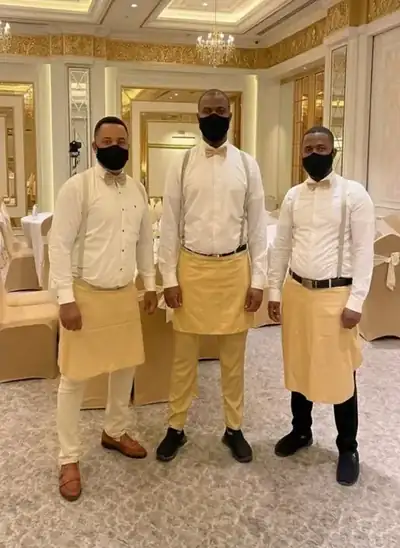
25 مقدمين طعام — سفرجية سفرجية بزي أبيض وحمّالات sv-safarjia-4.webp 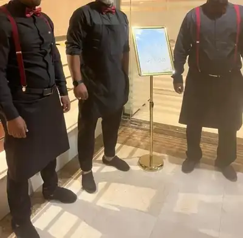
26 مقدمين طعام — سفرجية فريق خدمة طاولات sv-safarjia-5.webp 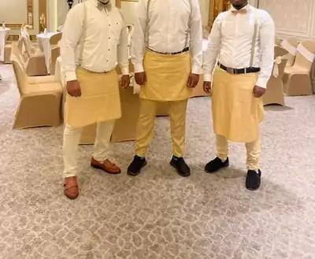
27 مقدمين طعام — سفرجية سفرجية بزي رسمي sv-safarjia-6.webp
الطاقم الرجالي › سوّاس (28–32)
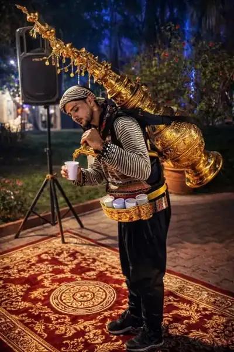
28 سوّاس سوّاس بزي تراثي مع إبريق نحاسي sv-sawas-1.webp 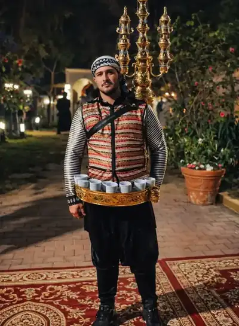
29 سوّاس الزي التراثي الأصيل sv-sawas-2.webp 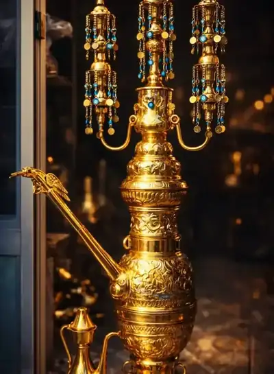
30 سوّاس إبريق السوّاس الذهبي sv-sawas-3.webp 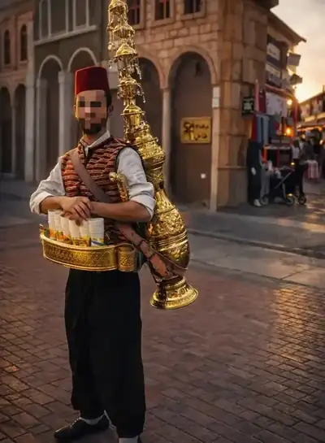
31 سوّاس ضيافة استعراضية sv-sawas-4.webp 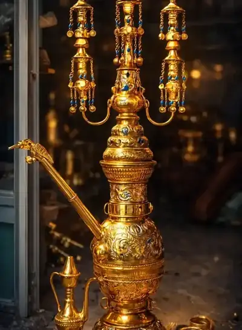
32 سوّاس تفاصيل التقديم الفاخر sv-sawas-5.webp
الطاقم النسائي › صبابات زواجات ومباشرات (33–38)
33 صبابات زواجات ومباشرات صبابات بزي أبيض وأسود مع دلال ذهبية sv-hostess-1.webp 34 صبابات زواجات ومباشرات مباشرات بزي رسمي في قاعة sv-hostess-2.webp 35 صبابات زواجات ومباشرات مباشرات بزي أحمر sv-hostess-3.webp 36 صبابات زواجات ومباشرات طاقم نسائي بزي موحد sv-hostess-4.webp 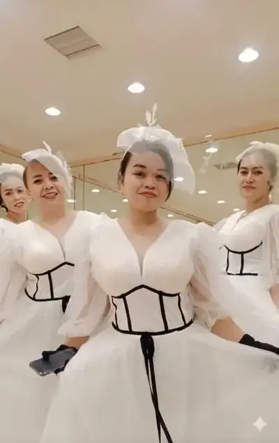
37 صبابات زواجات ومباشرات صبابات بزي أبيض للزواجات sv-hostess-5.webp 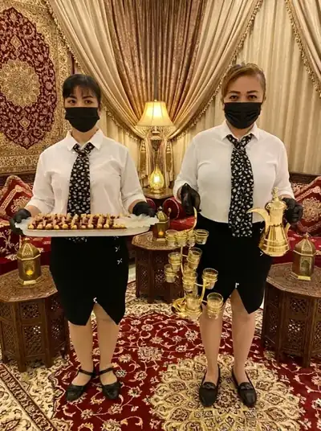
38 صبابات زواجات ومباشرات صبابات في مجلس نسائي sv-hostess-6.webp
الطاقم النسائي › مقدمات طعام (39–41)
39 مقدمات طعام مقدمات طعام بزي موحد sv-safarjiat-1.webp 40 مقدمات طعام تقديم المشروبات في قاعة sv-safarjiat-2.webp 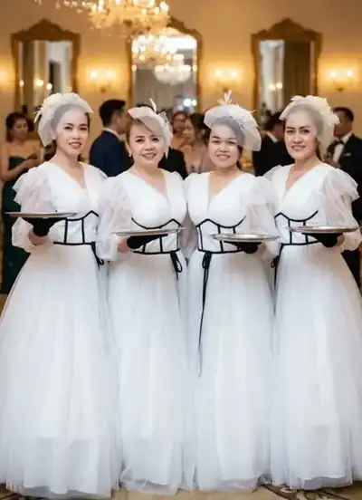
41 مقدمات طعام فريق نسائي بزي أبيض sv-safarjiat-3.webp
الطاقم النسائي › عاملات نظافة (42–42)
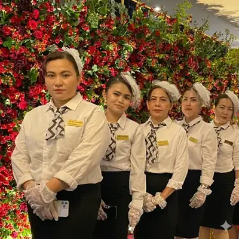
42 عاملات نظافة طاقم نسائي بزي موحد sv-clean-1.webp
تراث وفنون › خطاط (43–46)
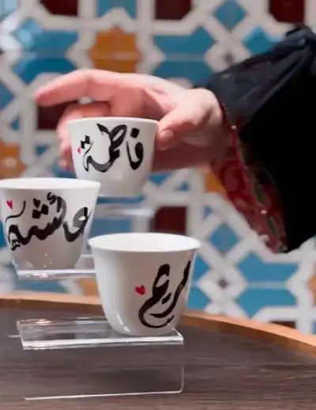
43 خطاط فناجين بأسماء الضيوف بالخط العربي sv-callig-1.webp 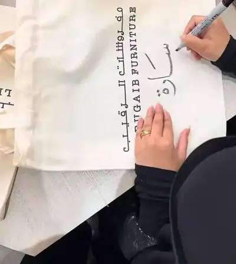
44 خطاط كتابة الأسماء على حقائب قماشية sv-callig-2.webp 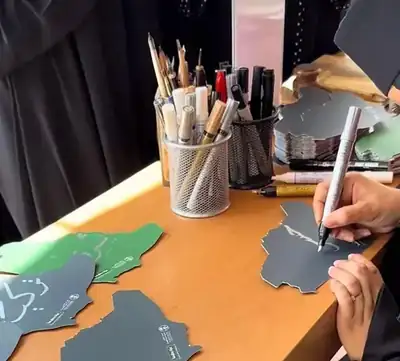
45 خطاط ركن الخطاط وأدواته sv-callig-3.webp 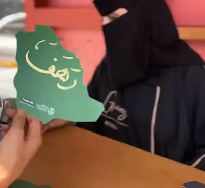
46 خطاط خريطة المملكة بخط عربي sv-callig-4.webp
تراث وفنون › رسّام بورتريه (47–50)
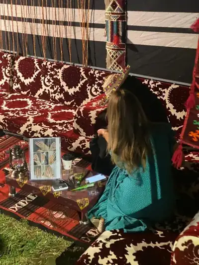
47 رسّام بورتريه ركن الرسّام في خيمة تراثية sv-artist-1.webp 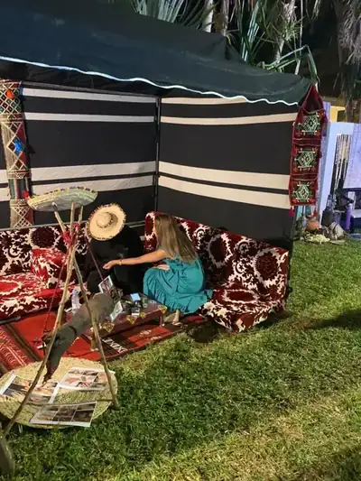
48 رسّام بورتريه رسم بورتريه حي للضيوف sv-artist-2.webp 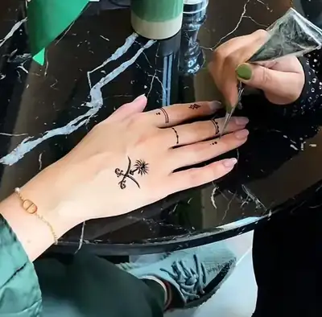
49 رسّام بورتريه رسم على اليد بالحناء sv-artist-3.webp 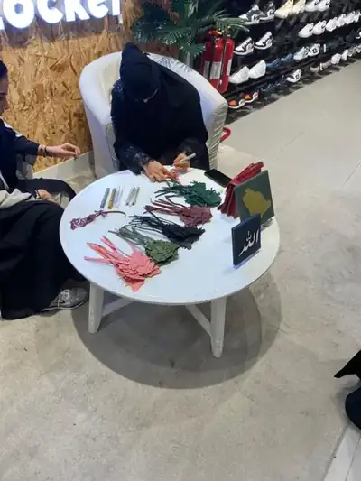
50 رسّام بورتريه ركن فني للضيوف sv-artist-4.webp
تراث وفنون › فرقة شعبية (51–52)
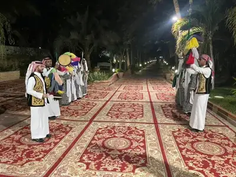
51 فرقة شعبية فرقة شعبية على السجاد الأحمر sv-folk-1.webp 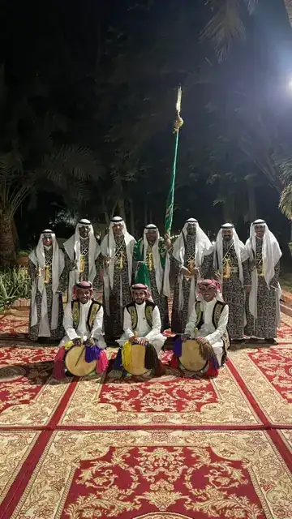
52 فرقة شعبية عرض فلكلوري ليلي sv-folk-2.webp
تراث وفنون › خيمة تراثية (53–56)
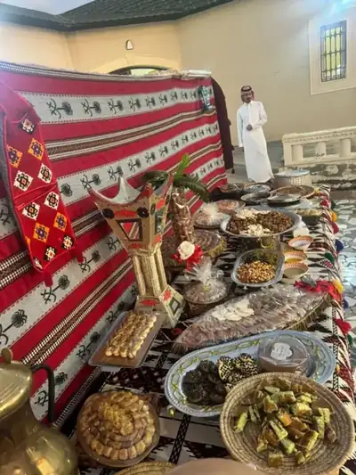
53 خيمة تراثية ركن ضيافة تراثي بقماش السدو sv-tent-1.webp 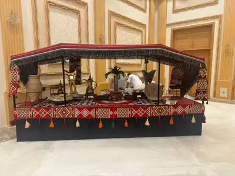
54 خيمة تراثية خيمة تراثية داخل قاعة sv-tent-2.webp 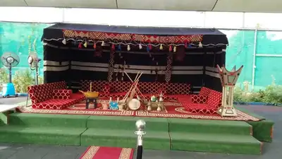
55 خيمة تراثية خيمة خارجية بديكور تراثي sv-tent-3.webp 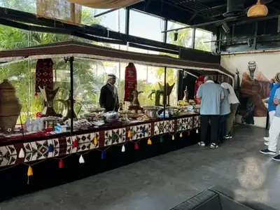
56 خيمة تراثية خيمة ضيافة تراثية sv-tent-4.webp
أركان وتجهيز › تجهيز طاولات استقبال وكاونترات (57–59)
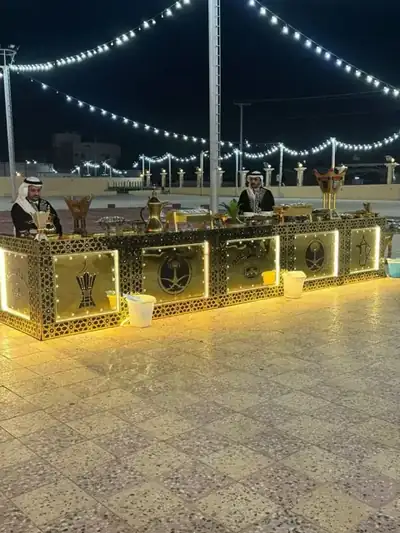
57 تجهيز طاولات استقبال وكاونترات كاونتر استقبال مضيء sv-counter-1.webp 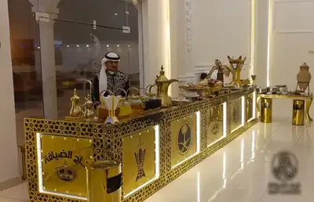
58 تجهيز طاولات استقبال وكاونترات كاونتر قهوة ذهبي sv-counter-2.webp 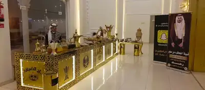
59 تجهيز طاولات استقبال وكاونترات كاونتر ذهبي بزخارف هندسية sv-counter-3.webp
أركان وتجهيز › ركن التصوير (60–63)
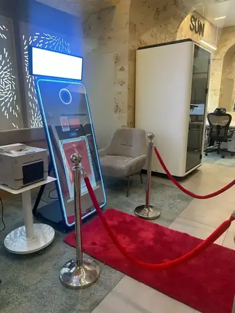
60 ركن التصوير مرآة التصوير على سجادة حمراء sv-booth-1.webp 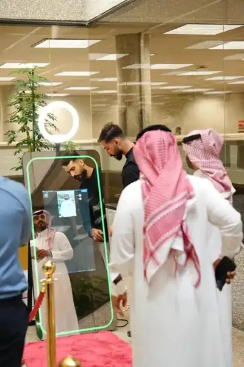
61 ركن التصوير الضيوف حول مرآة التصوير sv-booth-2.webp 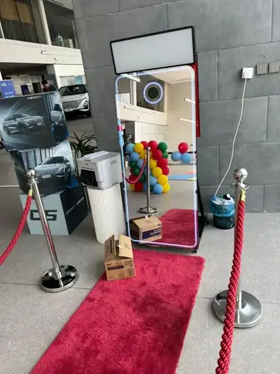
62 ركن التصوير ركن التصوير في معرض sv-booth-3.webp 63 ركن التصوير مرآة تصوير ذكية sv-booth-4.webp
أركان وتجهيز › بوفيه متكامل (64–67)
64 بوفيه متكامل بوفيه معجنات على ستاندات ذهبية sv-buffet-1.webp 65 بوفيه متكامل بوفيه ضيافة متكامل sv-buffet-2.webp 66 بوفيه متكامل أطباق مقبلات مرتبة sv-buffet-3.webp 67 بوفيه متكامل طبقات معجنات وحلويات sv-buffet-4.webp
أركان وتجهيز › طاولة متنقلة (68–70)
68 طاولة متنقلة طاولة ضيافة بغطاء سدو مع قهوجي sv-table-1.webp 69 طاولة متنقلة ركن قهوة متنقل بديكور تراثي sv-table-2.webp 70 طاولة متنقلة طاولة ضيافة متنقلة sv-table-3.webp